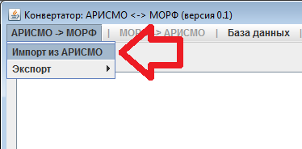
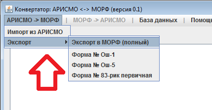

Оглавление
Программа ARISMORF предназначена для конвертации данных из системы АРИСМО в систему МОРФ.
Скачать самую свежую версию программы вы можете на сайте: http://ricoko.ru/
Руководство пользователя
Экспорт данных из АРИСМО
1. Запустите ПК «АРИСМО» (WinPoint)
2. Экспортируйте данные

3. Распакуйте архив с данными экспорта
4. Запустите программу конвертатора АРИСМО <-> МОРФ (АРИСМОРФ)
5. Если вы запускаете программу первый раз, либо хотите очистить базу данных конвертатора (очистка понадобится при повторном импорте данных из АРИСМО, либо при обновлении программы-конвертатора).
6. Импортируйте в конвертер xml-файл с данными АРИСМО (который вы создали в пункте 3)

7. Результаты всех действий конвертера заносятся в журнал. При возникновении ошибок, они также заносятся в журнал. Если у вас возникла ошибка в ходе работы с конвертатором, скопируйте содержимое журнала и отправьте его специалистам ГАУ РК "РИЦОКО" по адресу: arismo-rk@ricoko.ru
8. Запустите экспорт в формы МОРФ. Вы можете экспортировать как все формы, так и только определённые формы.

9. Конвертер автоматически откроет папку с результатами экспорта. Загрузите полученные xls-файлы (файлы формата Excel) в МОРФ.
Программа написана на языке Java с использованием сборщика maven2.
Вы ознакомиться с исходными кодами программы, а также участвовать в дальнешей разработке и совершенистовании программы: https://github.com/xupyprmv/arismorf
Программа содержит встроенную СУБД MySQL, запускающуюся автоматически при запуске конвертатора. СУБД использует порт 3307. Разрешите вашему файерволу доступ по этому порту.
Журнал изменений
11-09-2011 версия 0.1
- - Автоматическое создание структуры базы данных, аналогичной АРИСМО.
- - Автоматический импорт справочных значений АРИСМО.
- - Возможности импорта результатов экспорта АРИСМО.
- - Возможности генерации данных формата МОРФ по формам Ош-1, Ош-5 и 83-рик первичная.